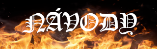

JAK LUKAS PIKO UVARIL
JAK LUKAS PIKO UVARIL JAK UVARIT PIKO PODLE RADKA Z USTI NAD LABEM
JAK UVARIT PIKO PODLE RADKA Z USTI NAD LABEMJsme sekta a chceme nadvládu nad světem, spoustu sušenek, kyselých bonbonů a Matějů!

Dáme Vám smysl života
Sláva Otci... (axologie) Sláva Lukáši i Matějovi i Axolotlu svatému, jako byla na počátku, i nyní i vždycky a na věky věků. Amen.
